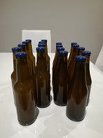
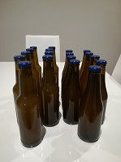
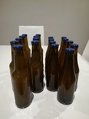

- The Walking Dead
- How to get away with murder
- The 100
 

 , plus précisement le tennis pour suivre les résultats des tournois.
, plus précisement le tennis pour suivre les résultats des tournois.- Youtube pour la musique essentiellement.
Après l'obtention d'un Bacalauréat STI - Sicences des Techniques Industriels, J'ai poursuivi mes études vers un BTS Génie Optique Instrumentale.
Celui-ci m'a permis d'obtenir mon premier emploi en tant que Technicien de maintenance en endoscopie qui j'ai occupé pendant deux ans et demi au sein de la société Olympus France situé en région parisienne.
Grâce à cette première expérience, j'ai eu l'opportunité d'intégrer la société CMI - Cleanroom Management International qui m'a proposé un poste de technicien validation qui a pour missions de contrôler des équipements dans les établissements de santé et dans les laboratoires pharmaceutiques.
J’ai ensuite évolué vers un poste de technicien métrologie que j’occupe depuis 5 ans. Mes missions sont de vérifier et de régler des instruments de mesures, comme des compteurs de particules, des capteurs de température, de pression et d’humidité.

, plus précisement le tennis pour suivre les résultats des tournois.